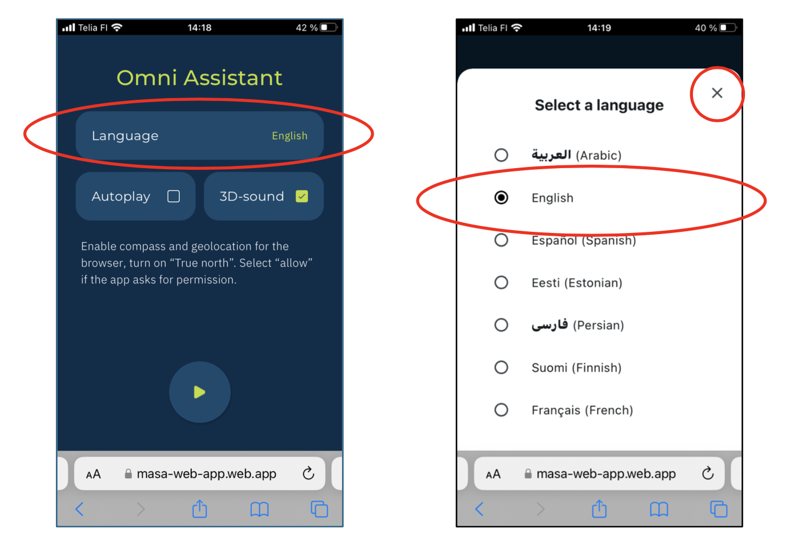
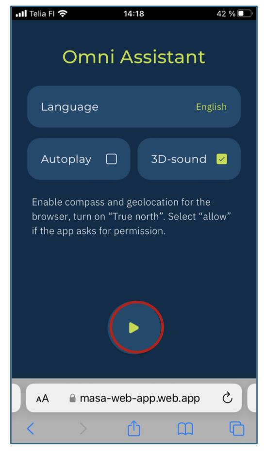
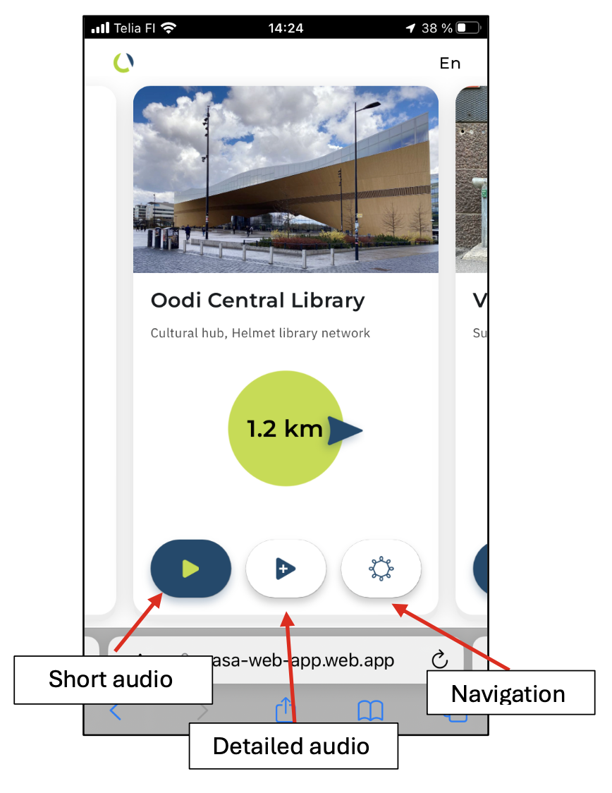

Discover Helsinki’s circular economy services and public facilities through accessible, multilingual audio guidance. This pilot, part of the CommuniCity program, promotes sustainable choices by providing inclusive audio content available in multiple languages, supporting equal access to information for all.
Available Locations
Scan to launch the app
The app works both on-site and remotely, but visiting the locations provides the best experience. Use headphones and a smartphone for optimal audio quality.
How to Test the OmniAudio App
- Open the link in your mobile
- Select your language, choose auto playback or spatial sound
 - If prompted, allow access to motion and positioning sensors
 - Start listening!
 - Auto Play: audio will play automatically when reaching each stop
- If not using Auto Play, tap the Play button for each guide
- Swipe slides to explore various city services
- Tap More... for extended audio and detailed info
- Outdoor locations: tap the HSL logo to open the route in HSL Journey Planner
Privacy Notice
The OmniAudio App does not collect, store, or process any personal user data.
Troubleshooting & FAQ
- The app asks for permissions: Allow access to motion sensors, positional sensors, and audio playback.
- Supported browsers: Google Chrome (recommended), Safari (iOS).
- Content not loading: Check your Internet connection.
- No directional instructions: Ensure access to motion/positioning sensors is granted.
- No sound: Check volume and mute switch (especially on iPhone).